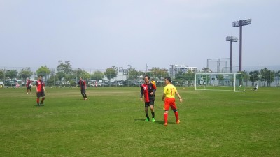

暑かったなあ。グランドは人工芝でいい感じでしたが、風が無い時は灼熱地獄でしたね。足裏熱かったなあ。
今日は遅刻、早退合わせてなんだかんだで１４名の参加がありました。ポンコツ戦力にならなかったし、暑さとかでダウンした人も居たから、やっぱり４時間の時はもう少し人数が欲しいですね。
今日は舞洲人さんのお誘いでSPARKさんと巴戦でした。お誘い頂き、また対戦して頂きありがとうございました。今後ともよろしくお願い致します。
今日はタイトなスケジュールで２０分合計６本しました。ほとんどの人が５本はしていると思います。ほんとお疲れ様でした。
試合ごとに簡単にいつもどおりカキコしていきますが、正直ばたばたとふらふらでしたので、あんまり覚えてません、不足分がありましたら各自補足をお願いします。
１本目はSPARKさんとでした。一度、チャレンジで日本代表のシリア戦だったかな？のフォーメーションで４-３-３でアンカーとインサイドハーフとでしましたが難しかったですね。全体的に攻められてた感じでした。
攻めではタクちゃんが孤軍奮闘してました。両チームとも得点無しでした。
２本目は舞洲人さんとでした。この試合も押されてた感がありました。まんちゃんががんばってセーブしてくれてました。攻めではタカさんの惜しいクロスがありましたね。
３本目は・・・まーっとん、どうしたの？？？？？今までの中で一番の珍事がありましたね。途中から参加してくれたわだっちから僕が後ろに戻って縦パスをもらって、そのまま反転し、少しドリブル。右側からまっとんが上がって来てたので、相手デフェンスとの位置とかも確認しながら縦へスルーパス、見事にまっとんに渡って、デフェンスもついて来れず。キーパーと１対１になってキーパーはまっとんのファントムドリブルにやられたのか、関係ないところでセービングして、その横を悠々とまっとんがドリして、ボールは無人のゴールへ向かって転々、てんてん、テンテンとその間、時間が止まったみたいでちょっとでもボールを最後触れていたら間違いなく決まっていたのに、転がって行くのをじっと見てたら相手デフェンスが追いついて来てゴールラインを割る前にクリア・・・・ありえへんやろ（笑）
まあ、その後にたくちゃんが僕が右サイドでおとりになったのを逃さずに中央から上がってきて、よっしゃんのパスを受けて、そのままドリブル見事にゴールを決めて連続ゴール更新中です。
でも反対に左サイドを切り裂かれてゴールも決められちゃいましたね。
４本目は舞洲人さんとでした。自分でいうのもだけど縦パスは結構上手いのかなって思ったよ（笑）。僕がバックラインでボールをキープして前を向いたらタクちゃんが一旦右方向へ平行移動して、その後前に向かって行ったんだけど、その切り替えの瞬間とオフサイドラインの状況を見た上でタクちゃんの走る方向に回転かけて縦パス、見事にタクちゃんの足元にボールが納まって、そのままドリブル、キーパーと１対１、狙い済ましてインサイドキックでシュート・・・右ポストにコーン（笑）、今日はスパイクがぼろぼろだったからかな？早くMIZUNOをGETしてくださいね。
僕もたまにするけどタクちゃんが裏を取るときに一旦横に平行移動するのはオフサイドにかからないようにであって、パスを出す人はその動きを見てタイミングを合わせて出さないと、鬼パスになってしまうので気をつけてよね、オカちゃん（笑）
守りではタカさんがゴール前に戻ってきてくれて何度もピンチを救ってくれてました。
この試合の途中でポンコツは違和感を感じたので引き上げました（涙）
５本目はスパークさんでした。比較的攻めてたような。タクちゃん曰く殺人クロスをタカさんがあげたのを、今日が初マイユニデビューのむらっちが飛び込んでジャンピングボレーをしようとしたり、オカちゃんがふらふらになりながら追いついて右サイドからマイナスにクロスしたのをタカさんがボレーシュートしたりしましたが、惜しくもキーパーに阻まれたりとかありました。
タカさんが左サイドで躍動してましたが、殺人クロスは駄目ですな、僕のように天使のようなクロスを上げないと（笑）
後はまんちゃんが頑張りすぎてペナルティエリアを越えてキャッチしようとしてハンドになったのはちょっとびっくり。
んで、最後は舞洲人さんでした。開始早々、まっとんが攻める、攻める、攻める・・・あーあ（笑）があってオモロー的にベンチで見てたら、浮いたボールをキープして相手をふわって交わした後に、お得意のふんわりロングループシュートが炸裂し、見事にゴールになりました。
今日はいろんな意味でまっとんDAYでしたね。
で、そのプレーに怒った相手チームが怒涛の攻撃があって、その後は体力的にもついていけずボコスカジャンと３点取られちゃいましたね。
まあ、そんな一日でした。参加された皆さん、本当にお疲れ様でした。
あ、なんかハマさんのおごりで納涼会を企画してくれるらしいですよ、さすがハマさん、いぶし銀はちゃいますなあ。
おちまい。
トホホ、いつになったら足が良くなるのやら・・・、今日は行けるかなって思ったらやっぱり痛みが（涙）
そんなポンコツも含めて、なんだかんだで１６名の参加がありました。
今日は今までで初めての珍事が、うちの前はラクロスしてて、まあ邪魔にならなそうだから早めにゴールネットだけでもつけとこかなって思って、道具入れを開けたら・・・ネットがない。管理人さんに連絡したら管理人さんもびっくり、いろんな調整をしてくれて結局ちょっと遅れたけど、管理事務所から新しい予備のゴールネットを持ってきてくれました。
最初はネットなしで、ポストシュートしてたけど、誰かがどうせ入らんからって言って始まったんやけど、ゴールの後ろに８人くらい居て（笑）、さすがにそこまではいらんやろと。
途中でネット付けてからは結構みんないいシュートを思いっきり打ってましたね。やっぱりゴールがあるといいですね。
ポストシュートのあとは、左右に分かれて、ボールを反対側に出して、受けた人が元々の方向のコーナーのほうへロングパス、それを最初ボールを出した人がセンタリングして、ボールを最初受けた人がシュートって感じでしました。試合でも形は違ってもサイドへのスルーパスはあると思うので、それを中にクロスする練習になったと思います。
次はまんちゃんにキーパー専属でお願いして、５人３チームで攻めと守り、休憩チームがコーナーやあちこちからボールを中に入れてセットプレイの練習をしました。結構、キッカーが手前の攻めへのショートパスが多かったような気が（笑）、まあ本番では緊張感持って攻めたり守ったり出来ればいいと思います、うちは特にセットプレイからの失点が多いので。
無理に競ったりはしなくてもいいけど、攻めて自分のマークの人にはきちんとついて行ったり体を寄せたりする意識は持って欲しいですし、攻めている時は反対に相手のマークをどう外すか、相手の一歩前に出る意識を持って欲しいですね。
んで、最後はゴールを前に出して、キーパー専属にして８対８を何本かしました。何度かキーパーしてくれたむらっちありがとね。
オフサイド？だったかな？でプレーが止まったのにかかわらず、コスイんがボールをキープして攻めようとしたり、終了してからゆっきーが鬼のようなシュートをしたり、僕にもぶつけたり、見てないからわからんけど、クロスのボールをたまたま下がりながらバックヘッドしたらゴールが決まったりとかあったかなあ。
後はもりちゃんが軟体動物みたいなトラップしたりボールぶつけられたりしてたなあ。
あとはハマさんがいい感じで相手をかわしたのに明後日の方向にぱぴゅーんってシュートしたりと、いろいろありましたが、いい練習になったと思います。
個人的には足が気になってオカちゃんに散々やられてたなあ。
まあ、そんな感じでした。
来週は試合です。メンバーが厳しいです。また、ポンコツはあてにならないので、何とか未定、未登録の方、欠席でも調整可能な方は出席をお願いします。
本日参加された皆さん、お疲れ様でした。
あーあ、あーあ、あーあ、あーあ。ボール蹴れてないのに活動報告って辛いなあ（涙）
今日は涼しい風が吹いていて、暑さもそんなに酷くなく絶好のサッカー日和でしたね。だから余計辛いっす。まあ、あと少しは我慢かなあ。治りかけてでまた元に戻ったら意味ないしね。
今日はひやかし１名と体験さんとか合わせて合計で１７名の参加がありました。
早退の方も居られたので、最初僕がコートを用意している間に各自アップして、そこからいきなりミニゲをしました。
今日から部費で買ったビブを使いましたが、値段の割にはよさそうな感じでしたね。洗濯したりして色あせとかがちょっと心配かな？
まあ、いつも通りに楽しくできましたね。ごろさがまえちゃんの強烈なクロスに激チーンとなったり、ヒロさんが吹っ飛んでたり、タクちゃんがなかやんに完全にふさがれてたり、ゆっきーが絶好の縦パスで無人のゴールの上にボールを蹴ったり、もりちゃんが切り返そうとしてボテってこけたり、わだっちとかきさんがサイドに居てかきさんの代わりにわだっちがフォローに行ったら、かきさんがわだっちにぶつけて外に出したりとかいろんなことがありました。
最後は連続的にパス回しで最後はハマさんの空中パスを走りこんでいたたくちゃんが上手く決めて終了しました。
それにしてもハマーの車のブザー、ハザードがおもろかった、ハマさんがミスした時になってたのかな？（笑）
あとは車と変わらず、バイクでも鬼走りしてたほっしゃんには脱帽です。
まあ、そんな感じの一日でした。参加された皆さん、お疲れ様でした。
皆様、日曜はお疲れ様でした。
最近練習に立て続けに参加していて、体が動く感じがしていたので、試合では1点取りたいなぁと思って臨みました。すると1本目にたくちゃんからいいパスをもらって、プレッシャーもなく、ゴールの左隅に蹴り込んだのですが、思った方向とは全く違ってキーパーの真正面にいってしまい、悔しかったです。
4本目のパスは敵の裏をねらって蹴ったのですが、力もなく、方向もあかんかったですね。。5本目のチャンスではワッチさんからこれまたいいパスをもらい、今度は狙ったとおり左隅に入ったのですが、周り見えてなく、オフサイドで、浮かれてた自分が恥ずかしいです。
自分のことばっかりですみません。たくちゃんは相変わらず凄いし、初試合参加で点を決めたむらっちさんもいい感じでしたね。
それにしてもまっさんはすごく試合出たかったでしょうけど、そんな中で全ゲームで主審をしていただいてお疲れ様でした！
うがあああああああああ・・・・・（先週比３．５倍）やっぱりさあ楽しそうにしているのをそばで見ているのは行き地獄だよな（涙）、しかも試合だしねえ。
今日はいいお天気で少し風もあっていい感じでした。あーあ、審判最高（涙）
今日は合計で遅刻とかも合わせて１６名の参加にひやかし１号と２号とで合計は１８名の参加がありました。お相手して頂いたファントリックさん、ありがとうございました。いつのまにか人数増えてるやん（笑）
両チームとも大勢いたので２０分２本して、１５分２本して、最後はまた２０分と合計５本しました。
いつも通り得点シーンを元にカキコしていきますね。半分ブルーになりながらやし、試合出ながらの方が覚えているなって今日気づきました（笑）
１本目はお互いに攻めたり守ったりでしたが、攻められている時にゴール前では奪ったら基本大きくクリアでいいと思います。パスで繋いで横とかにそらそうとして、それを取られたりするシーンが何度か目立ちましたね。
うちもいい感じで攻めてました。その中心がフィールドの爆音マシーンS77タクちゃんでした。相変わらず、トラップとかスピードの切り替えとかいい感じでした。僕的には相手チームに居たら絶対に止めてやるオーラが出るけどね（笑）
中央で切り込んで打ったシュートはゴールバー直撃でした。その跳ね返ったシュートを元祖、最近ちょっと黒煙が出てやばい爆音マシーンのオカちゃんが見事にぱぴゅーんでしたね。今日も頑張って走ってたけど報われなかったっすね（笑）
んで、その後に右サイドでドリして、そのまま相手を交わしてキーパーと１対１、インサイドで反対の左サイドネットに突き刺さりました、ナイスゴールでした。（ん？反対側やったかな？）右サイドで同じ感じがすぐにあったけどそれはキーパーの真正面でした。
そのあとに、右サイドからタクちゃんとまっとんがワンツーで、そのまま、まっとんが風に乗ってドリブルしシュート・・・キーパーの真正面でしたね。惜しかったけど、後のいろんなプレーで帳消しやな（笑）
あとはタクちゃんのスルーパスに本日初試合、幻のユニ「０」をまとったむらっちがギリギリ届かなかったという惜しいシーンもありました。
個人的に印象に残っているのは右サイドで誰か忘れたけど結構な鬼縦パスをなかやんが必死に相手をブロックしながら追いついてたのと、攻められている時にまんちゃんが給水しててあわてて戻ったのがちとおもろかったっす。
２本目はタクちゃんの殺人コーナーキックしかあまり覚えてないなあ。右サイドから強烈なボールを相手がヘディングでクリアしたら、首がもげそうやった（笑）、連続での２回目も結構えぐい速さやったけど後ろから走りこんできたトシキに合わせた感じで、おおっと思ったら、その前に居たおかちゃんがJUMP、見事バックヘッドになって遠くへ飛んで行った（笑）、思わずトシキも「おお」ってびっくり。タクちゃんは「お前にあわしてないねん」と愛のムチ（笑）
そんなオカちゃんも左サイドから駆け上がって中にクロス、中央に居たトシキがそれを流し込んだけど残念ながらオフサイド。でもいい攻撃でした。
バックでは遅れてきたスケさんとヤスさんのコンビが久々に見れたのが良かったです。でもまだ僕には及ばんかなって怪我治してから言えってね（涙）
あと、ファーストタッチだったかな？引いてもらいに来たゆっきーが走りながら「ウェーーーーー」って昨日のどぶろく五升飲んだのが残ってたらしい（笑）
そういえばタオルを首に巻いてプレーしてた変なおじさんも居たな、熱覚ましかな？
この試合は双方、得点入らずでした。
３本目です。この試合は２点取られました。崩されてじゃなかったし、相手さんが上手でしたね。１点目はコーナーからクリアしたのをノーバンでボレーシュートされて、見事に決められました。もう１点は相手の代表さんが昨日の練習を休んでまで溜めた気力をバーンと放出して、超ロングループシュートが飛んできて、無回転やったっぽいし、一旦まんちゃんが下がりながら止めたんだけどそのまま押し込まれちゃいましたね。ファントリックさんには毎回ロングで決められている感じがします。
でもうちのゴール前での相手のフリーキックはまんちゃんが壁の指示とか出してナイスセーブをしてくれました。やっぱりキーパーしてくれるのはほんと助かります。僕がしたらスイーパーだもん（笑）
うちのプレーとしてはむらっちが攻撃で股抜きを２連続して、おおって思ったら、最後は何か蹴っとけみたいでトーキックでキーパーに向かってボールが転がって行ったのが惜しかったなあ。
４本目です。この試合はもう印象がまっとんのプレーしかあんまりない（笑）。左サイドバックしてて、ボールをキープ。相手は２，３人で取りに来ている。迫ってきてもひょうひょうとドリブルとかで相手を翻弄、思わずサイドから見てたタカさんと見学に来たテラポッキーが驚きで見てて、僕も審判しながらおお、すげえって思ってて最後は真正面が空いたので余裕をかまして前方の「相手チームのメンバー」にパス・・・、なんでやねん（笑）
あとはまえちゃんがこぼれ球をロングで果敢に狙ったり、わだっちがいつもながらに縦横無尽に動いてたのが印象的でした。
ウオッカ１０杯飲んだ後のゆっきーが右サイドでフリーで叫んでいるけど、プレーが左サイドに偏っていたのがもったいなかったなあ。タクちゃんが一度出そうとして地球蹴ってたのは見たけど（笑）
うちは縦パスが多いほうだけどサイドチェンジは少ないと思います。直接無理だったら真ん中経由してもいいと思うのでもっとサイドを有効活用していきましょう。
５本目です。何とか逆転しようって気持ちが入った感じでした。その口火を切ってくれたのがタクちゃん、左サイドでボールをキープ、ゆっくりドリと思いきや一気にギアを上げて相手を置き去りで、そのままキーパーと１対１、お見事に決めてくれました。（１試合目とどっちかわからんわあ、タクちゃん解説よろしく）
２点目も起点はタクちゃんでした。左サイドでキープ、そのままドリしてシュートじゃなくパスやったかな？とにかく、そのボールがむらっちにわたって、むらっちも相手を交わしながらシュート、初試合、初ゴールを決めてくれました。初試合と初ゴールの感想をお待ちしています。
タクちゃんが最後左サイドから攻めて、シュート打つかなあと思いながら、反対から上がってきたタカさんへの接待？？絆？？パスはギリギリ届かず、外側のサイドネットにで惜しかったですね。
んで、最後の締めはやっぱりまとぞう君ですね。わっちからの縦パスにまっとんがそのままスピードに乗ってゴール前に切れ込んでシュート、今度は見事ゴールネットを揺らしました。んで、僕はちょっと遠くから審判してたんだけど、オフサイド？？って思ったけど、相手チームのライマンがフラッグ上げないから、ゴールでいいやって思ってたら、ゆっくりと旗が（笑）。その間、まっとんにはきっと風になった自分に酔ったり、嬉しさがこみあげていた時間が走馬灯のように過ぎていったのでしょう（笑）。
まっとん大先生には今日の３つのプレーの感想文を２０００文字以上で宿題です（笑）
まあ、そんな感じの一日でした。一番ゲームに参加してたんは審判してたわいやで~（涙）
本日参加された皆さん、お疲れ様でした。
あと、購入したビブは僕の体格で脱ぐときに少しだけ窮屈間があるくらいなので、値段の割にはいい感じかなと思います。来週以降、練習時には必ず持参をお願いします。
うがあああああああああ・・・・・、やっぱりさあ楽しそうにしているのをそばで見ているのは行き地獄だよな（涙）
体験参加さんが来られたので、見学に行きましたが辛いっすねえ。休憩中にはいじられるしさ・・・かなりボヤッキー状態での報告です。活動報告？・・・て個人的には見学報告やんかあ。
みんなも怪我には気を付けようね。
さて、今日は早退と体験参加者さん入れてなんだかんだで１４名の参加がありました（追加でブルーなひやかし１名）
金曜日の夜の雨の影響で、普段している付近は水たまりがちょこちょこあったので、ちょっと狭かったですが奥の方でしました。
最初はアップして、その間に僕がコート作ってそこからはミニゲずっとでした。横が狭かったのでサイドを使っては難しい面もありましたが、縦へのスルーパスとかがいい感じのプレイとか普段よりパス回しが多かった感じがしました。
ゴール前にナイスパスもらっても決めきれずが結構居たけど、スガちゃんのシュートはお見事でしたね。あとはまっとんがドリブルでかわして無人のゴールへ打とうとしたら後ろからふっかんがまっとんの代わりにオウンゴールはおもろかった（笑）
ごろうの絶叫とかもいつも通りで、よっしゃんのナイスボレーとかあったりで楽しそうだなって遠い目で見てました（涙）よっしゃんと言えばお尻に浣腸？攻撃くらって悶絶してたなあ。
あとは今日はけっこう爆撃やその流れ弾の被害が多かったような、特にもりちゃんえらい目にあってなあ（笑）
全体的に違う意味でのMVPはやっぱりゆっきーかな？体験参加さんへの縦パスと思わして走るだけ走らせといて、実はそのままロングシュートだったという極悪非道なプレーがあったり、休憩中にコンクリートの歩道でもりちゃんが息子相手のために？バスケのドリブルの練習をぽつんとしていたら、「蟻を殺している」って、ようそんな発想が出てくるわ（笑）
まあ、見ててうずうずしてフラストレーション溜まりまくった一日でしたっす。
参加された皆さん、お疲れ様でした。

今日はいいお天気でしたね。最後の方は結構な浜風が吹いてましたが・・・。
パッシオさんのお誘いで遠方でしたが、合計で１３人の参加がありました。天然芝でいい感じでした。
本日はご招待いただいたパッシオさん、マイラインカーには脱帽しました。そして対戦して頂いた加賀田シニアチームさん、本当にありがとうございました。
今日は遠方なんで、乗り合いで行きましたが、僕は合計６人でちょっとした大人の遠足気分でしたね。運転中に掛かっていた歌の歌手名が全然みんな知らなくて、なんで森口博子や井森美幸やねん、誰が聞くかってどんな歌があるかもしらんわ。有名な曲が流れても最後までなかやんは歌手名が出てこず、ちょっと時代から離れているカツさんもわかったのに、イニシャルヒントしたら、中島みゆきはともかく、長澤まさみはびっくりだったよ（笑）。ず～っと、ず～とねぇ、って反対にトシキとかは名前聞いてもわからんかもね。正解は各自で考えてください（笑）
さて、本題に入ります、眠気に負けて仮眠してて、これのためだけに起きたので半分ボケているので変な文章だったらご勘弁を。
今日は基本３チームですがパッシオさんがAチームとBチームと分けてされたので合計４チームでの試合になりました。１５分ハーフで１チームに対して前後半って感じだったかな？相手チームさんには６０歳代も居られて、それまで出来ればいいなあって個人的に思ってました。
一本目は加賀田さんとでした。いきなりまっとんが見せてくれました。なんもないとこで突然にずっこけ（笑）、でも右サイドから切り込んでセンタリングとかいいプレーもありました。双方ともに攻めたりしてていい感じでしたね。わだっちが切れ込んでおしいシュートがあったり、まえちゃんからのスルーパスにカツさんが走ったけどギリギリ間に合わなったりも惜しかったです。久々の参加なのに全体的によく走ってくれてました。強烈なドライブパスだしてごめんなさい。良かったら久々の試合参加の感想をお待ちしています。得点は双方入らずでした。
次にパッシオAさんとでした。この試合も双方得点なしでしたが、一試合目と同じ感じでしたね。わだっちとトシキのワンツーで決まらなかったけどわだっちの強烈なシュートがありました。
攻めが右サイドに偏ってて、左サイドはちょっと暇でした（笑）
３試合目はパッシオBさんとでした。ここからトシキ劇場が始まりましたね。相手のセンターバックがボールをキープ、僕がパスコースを防ぐために少し間合いを開けてプレッシャーをかけていて、相手が右側を見ながら悩んでいる時に相手の左斜め後ろからこそ泥のようにトシキが忍び足でボールを奪って、そのままキーパーと１対１でお見事にゴールを決めました。
２本目も僕とトシキが絡んでました。左サイドで誰からか忘れたけどパスをもらって、そのままドリブリで駆け上がって、いつも通り中にクロスをと思って見たら誰も味方が居なくて、結局そのままサイドライン近くから切り込むことに、キーパーと１対１になったけど、今までも何度か決めた斜め１５度くらいからの右サイドゴールに向けてループシュートを打ったら、自分の思い通りの最高のボールになって、「おっしゃ」って心の中で思ってたら、シジマールのようなキーパーが手を上げてボールをブロック・・「うそやん」て思って下を向いていたら、何か歓声が・・、後から聞いたらキーパーがブロックして前に転がったボールにトシキが詰めててヘディングで押し込んだらしい。感謝感謝だけど、もっと早く上がってこんかい（笑）
次は再度、加賀田さんとでした。一進一退でしたが、相手のロングボールが飛んできて、なかやんとわだっちが対応しようとしてて、なかやんがボールの落下点に追いついたのはいいんだけど、野球での伝説の宇野選手のような感じでドンピシャで頂頭部に当たって、見事なバックヘッド、３０メートルくらい飛んで行って、その後ろで構えていたわだっちも予想外、相手チームがそのボールに追いついて、そのままドリブル、まんちゃんも何とか粘ってくれたんだけど結局は決められちゃいました。
次はパッシオAさんとでした。この試合もトシキが躍動してましたね。まえちゃんのいつもながらの縦のスルーパスに反応して、そのままゴール前まで持ちこんでシュート。お見事でした。もう一点はタクちゃんのコーナーキックからトシキが飛び込みながらキャプテン翼の石崎君ばりの顔面デフェンスじゃないけど、低空でのダイビング顔面ヘディングシュート、ちょっと当たりそこなったけどゴールになりました。「ボールは友達さ」って言ってたから大丈夫でしょう（笑）、トシキには打倒タクちゃん、一応オカちゃん？？？に向けての感想等を２万文字でよろしくです。テラさんやばいよ、やばいよ～（出川風に）
最後はパッシオBさんとでした。最後は得点決められちゃいましたね。バックラインを上げてたのもあったりで、裏にパスを通されて、そのままドリブルされて決められちゃいましたね。仕方はないですが、僕がいつもスイーパー的なポジションで居るのは、そういったボールの対応のためです。特にセンターバックはサイドとかが抜かれた時に裏をフォローできるポジショニングが必要になってくるかなって思いますので、意識しておいてもらうといいかなって思います。まあ、ケースバイケースですけどね。まんちゃんはご家族がビデオを回していたのできっと自己分析されるんでしょう。でも足が痛い中今日もガッツを見せてくれました。
何とか１点をと思って僕は攻めましたが、最後の方でドリブルで中央から右側にそれながら、腰をひねってシュート・・・ゴールポストにかーんって（涙）、今日はタクちゃんともども駄目でしたね。そのこぼれたボールを中央からわだっちがロングシュート打ってくれたりしましたが得点にはつながりませんでしたね。
最後の見せ場は何と言ってもまっとんのファールスローでしょ（笑）、近くに居たまえちゃんの冷ややかな目で攻撃を食らっていたような気が（笑）、ファールスローを取られた時に、ファンクラブに入ってたらしい、ゆいPのおなじみのセリフ「これが、お前らのやり方かあ・・」と叫んでたらしい（笑）。まとぞう日記を楽しみにしておきましょう。
まあ、そんな感じでした。休憩時間が短い中、早くポジション決めるのとか審判とか行ったりしてくれたりとご協力ありがとうございました。でも最後は足がやばい中僕が主審を２回目で行きましたが、主審はいつも同じメンバーなので、失敗しても仕方ないですし、僕も失敗はしますので今までしたことない方も出来ないでは無くて、してみようかなって気持ちで対応をお願いします。
本日、参加された皆さんお疲れ様でした。
あーあ、枚方に戻ってきてからじーめんが美味しかった、よっしゃんは次は面６００ｇに挑戦だそう（笑）
今日もプレー中に結構な痛みがあったので、明日以降、個人的に痛みが完治するまでしばらく治療に専念したいので不在時にはみなさんにいろいろと負担を掛けますがご協力のほどよろしくお願いします。
まだまだ、足が痛い状況での活動報告っす。見学した方がと思いながらやっぱりボール蹴ったら楽しいもんね。まあ、無理して僕が駄目になったらハマさんが継いでくれるでしょう（笑）
今日はいいお天気だったですね。その割には涼しい風も吹いてていい感じでした。
今日は遅刻早退、体験参加を含めて１７名の参加がありました。久々に多くて楽しい時間を過ごしました。
この時期はファミリー連れとかも多いのもあって、今日は最初から奥の広場に変更して活動しました。
早退の人も居たので最初からミニゲでしたが、今日も笑いアリーのいいプレーもあったりでした。
ごろうがボールに乗ってこけたりとかで絶叫が響き渡るわ、おかちゃんがなかやんにパスを要求したあとになかやんにぶつけるわ、まんちゃんが足が攣りそうと言いながらめっちゃ動くは、久々のルフィーというよりかは釣り堀の管理人にしか見えなかったかきさんの惜しい感じのプレーになぜかまっとんがどんまいとか言われるわ、日頃の恨み？ハマさんのわだっちが体当たり？するわ、などなどいろんなことがあったけど、今日はなんといってもわっちの面白さが際立ってた（笑）。
走る、滑る、見事に転ぶって何かの歌にあったけど、それに追加でこけてハンドするし、ゴール前では果敢にシュート、そのうち２本は完全にゴールが空いている状態でシュートしたらふっかんに止められるわで、最後までふっかんにやられてた。あとはライナー性のシュートが明後日の方向へもあったかな（笑）
まあ、そんな感じの一日でした。
来週は土、日と両方あります、参加出来る方は楽しくボール蹴りましょう。
本日参加された皆さん、お疲れ様でした。
昨日に続いて活動報告でっス。
今日はいいお天気でそよ風が吹いていていい感じでしたね。癒しの一本木のありがたみが段々と感じる季節になってきました。
今日は体験参加の方を含めて１０名の参加がありました。昨日と連続して参加された方お疲れ様でした。
最初は９名でしたので、外６、中３で鳥かごをしてアップしました
次に初めてのメニューとして、３人１チームでリフティングをして、前方に進んで、ある地点に行ったら戻ってくるというのをしました。ワンバンまでOKにしましたが結構難しくて、特にハマさんが大暴れしてました（笑）、わだっち、タカさん、ゆっきーチームが早くて作戦会議も立ててましたね。途中で１人ずつのリレーに変えたり、２人ずつにしたりとそれなりに楽しく出来ました。基礎練の延長ですがたまにはいいもんですね。
次にこれも初めてですが、うーん説明が難しいなあ。三角形をコーンで作って、各三角形の辺にゴールを作って、３人１チームで３チームで自分のエリアのゴールされたら負け、後の２カ所にどちらに決めたもOK、攻めるのは３人でOKだけど、守りは各チームに1人ずつしか取りに行けないという感じでしましたが、これが難しいというか油断していると攻めているチームからカットして、カットしたチームが攻めているチームでは無くてもう１チームのゴールを狙うこともあったりで結構いい練習になりました。これもわだっち、タカさん、まっとんが作戦会議をしてというか、わだっちチームは守りが固くて結局決められなかったのかな？
途中でゆっきールールで得点を３点入れたら勝ちに変更になってからも、なかやんチームが奮闘してましたが、結局はわだっちチームが優勝でした。僕のチームはべべでした（笑）
また、たまにしてみたいと思います。３で割って１余る人数ならフリーマンを置いたりもできますしね。
んで、昨日の疲れもあるし、暑さもあってゆっくり休憩してからミニゲをしました。その少し前にまんちゃんが来てくれたので５対５で出来ました。ミニゲ前くらいからゆっきーが花粉症で偉いことになってました。
ミニゲは縦はちょっと狭くして、横を広めでしました。今日の印象は僕は膝にお尻に肩にまんちゃんから砲撃をくらいました（笑）、わだっちとまっとんのパスワークからのゴールとかいい感じでしたね。癒しの木側のゴールには魔物が住んでいて、散々外れましたがグランド中央辺りで途中でタカさんの蹴ったボールがゆっきーがカット？当たっただけかもやけど、それが跳ね返ってゴールに入ったら魔物さんはあきれて逃げたみたいでそれからは何本かシュートも入りましたね。まんちゃんのスライディング押し込みとかありましたし。
個人的には足の痛みがやっぱりドリブルでうちから外へのタッチとかに痛みがあって、あまり動けなかったですね。それでも僕が持ったらふっかんやなかやんがオラオラ来たり、わだっち、タカさんコンビにやられたりと散々でした。コーナーを右足でボレーしたらタカさんに軽くいなされた（涙）、コース良かったのに。
あと体験参加さんのパスからハマさんがいい感じのタッチでゴールに流し込むというプレーもお見事でした。
最後は僕がやられまくっていたふっかんをパスするぞフェイントでひっかけて、そのまま中に早めのボールを入れたのをまっとんが決めてくれて終わりました。
まあ、そんか感じで本数的には少なめでしたが楽しく汗を掛けました。僕は来週からまた見学するかも？？
本日、参加された皆さんお疲れ様でした。
ちなみに今日のハイライトはゆっきーが転がってきたボールを子どもに渡すのに、子どもの胸に当てるという極悪さを発揮した時かな（笑）
今日は助っ人なしでゲームできたことはほんと良かったです。
それとまっさん怪我からの復帰戦での大活躍おめでとうございます。あのゴールはマジでしびれました。
たくちゃん、ユッキーのゴールは欲しい時間帯だったのでありがたかったです。
なのに・・・ほんとごめんなさい。みなさんしんどいなか必死で守ってくれていたのにGKの僕がバテバテで簡単に点を献上してしまいました。確かに両チーム強かったですがとられた点のほとんどは僕のミスなのです。
練習不足反省します。
でも楽しい一日でした。対戦相手のみなさんありがとうございました。